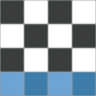
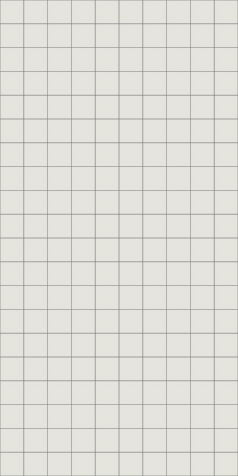
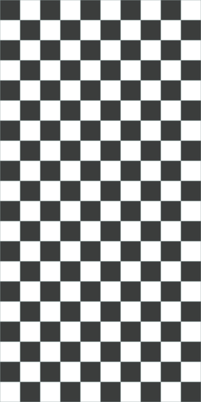
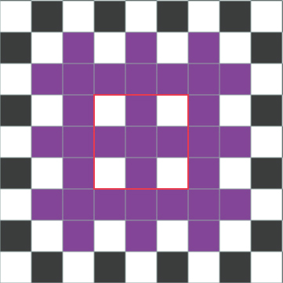

パリティ
ミノを並べる際に盤面を白黒に塗り分けることを考えます．
この塗り分けられた白と黒のマスの数を調べることをパリティチェックと呼びます．
| ミノ | パリティチェック |
|---|---|
|  | 2:2 |
| 2:2 | |
| 2:2 | |
| 2:2 | |
| 2:2 | |
| 2:2 | |
| 1:3 |
フィールドをパリティチェックしてみると，100:100であることがわかります．
このフィールドにミノを綺麗に敷き詰めようと考えてみると，
Tミノのみ1:3なので使い方が肝心であることがわかります．


Tミノは起き方によって白：黒が1:3にも3:1にもなります．
したがってTミノ2つ合わせて4:4になる起き方をすると地形的にもわかりよくなります．
Tミノによって崩されるパリティはTミノによってのみ解消されると考えても良いかもしれません．
Tミノを中心に考え，正方形で囲むとその周辺に位置させる起き方について考えます．
パリティチェックを行うと，中心のTミノと周辺のTミノについてすべて同じ数であることがわかります．
また，その際の回転方向などは関係ありません．
パリティチェックの結果は，Tミノの軸の位置によって異なります．
行または列が同じ場合は，軸の位置が偶数ブロックずれただけではパリティに変化はありません．
例ではすべて黒：白が3:1なのでこのような起き方を連続するとパリティに偏りが現れます．
